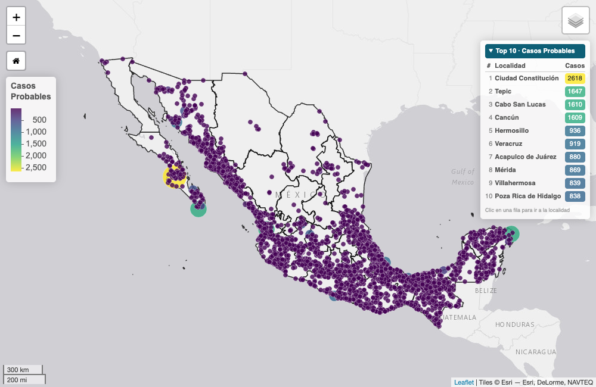
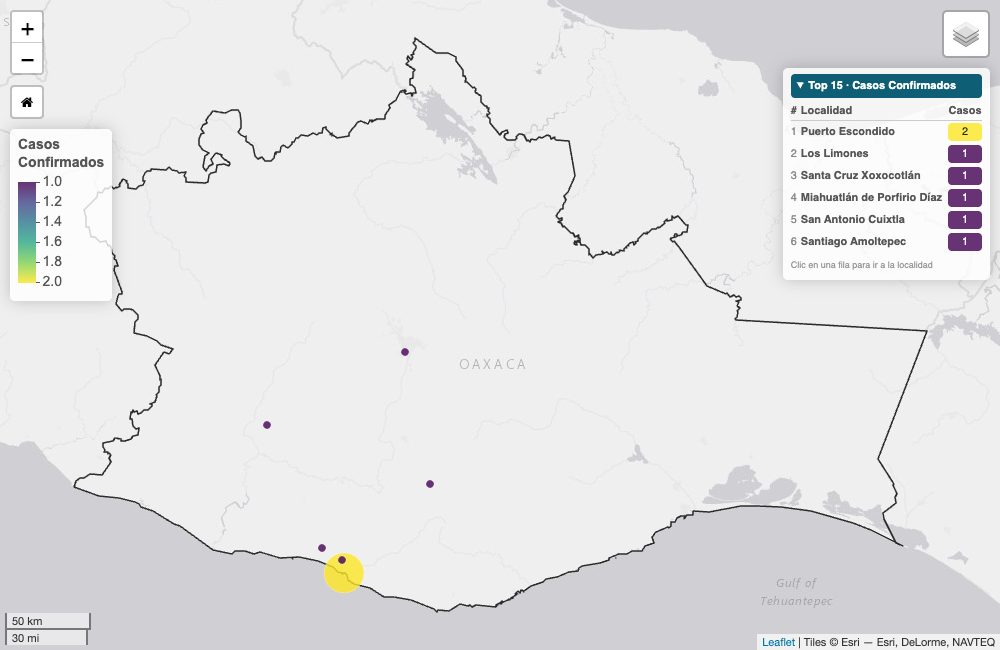

The locality is the operational unit of the dengue program: entomological surveillance, larval control and fogging are scheduled there. densnv has two functions to see where the cases are at that level:
cases_by_loc() reads the SINAVE dataset (dengue, Zika
or chikungunya), counts the probable and confirmed cases by
locality of report and joins them to the INEGI locality
catalogue (ITER 2020). It returns one point per locality with
cases.mp_cases_loc() makes an interactive map (leaflet) with
proportional circles, state and municipal boundaries, and a panel with
the localities with the most cases. Clicking a row of the panel zooms
the map to that locality.Column names and map labels are in Spanish, the language of the users of the Mexican vector-borne disease program.
den <- cases_by_loc(path = "DENGUE2_.txt", snv_dataset = "DENV")Only probable and confirmed cases are counted
(ESTATUS_CASO 1 and 2). The locality key
(cvegeo, 9 digits) is built from the state, municipality
and locality of report. The columns returned are:
| column | description |
|---|---|
| cvegeo | INEGI locality key |
| nom_ent, nom_mun, nom_loc | Names of the state, municipality and locality (ITER 2020) |
| probable | Notified cases (probable + confirmed) |
| confirmado | Confirmed cases |
| DNG, DCSA, DG | Cases by final diagnosis: non-severe dengue, with warning signs and severe (DENV only) |
| DENV1 to DENV4 | Cases by serotype (DENV only) |
| altitud | Altitude of the locality (m) |
| pobtot | Total population (Census 2020) |
| geometry | Point of the locality (EPSG:4326) |
Localities with the most probable cases in the country:
den |>
sf::st_drop_geometry() |>
dplyr::arrange(dplyr::desc(probable)) |>
dplyr::select(nom_ent, nom_loc, probable, confirmado, DCSA, DG) |>
head(10)
#> nom_ent nom_loc probable confirmado
#> 1 Baja California Sur Ciudad Constitución 2618 235
#> 2 Nayarit Tepic 1647 184
#> 3 Baja California Sur Cabo San Lucas 1610 234
#> 4 Quintana Roo Cancún 1609 285
#> 5 Sonora Hermosillo 936 679
#> 6 Veracruz de Ignacio de la Llave Veracruz 919 115
#> 7 Guerrero Acapulco de Juárez 880 20
#> 8 Yucatán Mérida 869 41
#> 9 Tabasco Villahermosa 839 121
#> 10 Veracruz de Ignacio de la Llave Poza Rica de Hidalgo 838 187
#> DCSA DG
#> 1 137 7
#> 2 127 9
#> 3 144 15
#> 4 80 4
#> 5 344 22
#> 6 65 3
#> 7 13 0
#> 8 23 1
#> 9 73 0
#> 10 69 1National summary by serotype and severity:
den |>
sf::st_drop_geometry() |>
dplyr::summarise(localities = dplyr::n(),
probable = sum(probable),
confirmed = sum(confirmado),
dplyr::across(c(DNG, DCSA, DG, DENV1, DENV2, DENV3, DENV4), sum))
#> localities probable confirmed DNG DCSA DG DENV1 DENV2 DENV3 DENV4
#> 1 5016 50234 10400 5212 4862 322 47 750 2914 12With the 2020 Census population the incidence per 100,000 inhabitants can be computed. It is better to restrict it to localities with enough population, because in small localities a single case gives a very high incidence:
den |>
sf::st_drop_geometry() |>
dplyr::filter(pobtot >= 10000) |>
dplyr::mutate(incidence = round(1e5 * probable / pobtot, 1)) |>
dplyr::arrange(dplyr::desc(incidence)) |>
dplyr::select(nom_ent, nom_loc, pobtot, probable, incidence) |>
head(10)
#> nom_ent nom_loc pobtot probable
#> 1 Baja California Sur Ciudad Constitución 43805 2618
#> 2 Sinaloa Eldorado 14772 136
#> 3 Sonora Pueblo Yaqui 14173 122
#> 4 Baja California Sur Cabo San Lucas 202694 1610
#> 5 Chiapas Pichucalco 15244 121
#> 6 Jalisco Cocula 16550 121
#> 7 Sonora Miguel Alemán (La Doce) 39474 285
#> 8 Veracruz de Ignacio de la Llave Oteapan 10343 72
#> 9 Michoacán de Ocampo Los Reyes de Salgado 49940 300
#> 10 Veracruz de Ignacio de la Llave Tihuatlán 15305 85
#> incidence
#> 1 5976.5
#> 2 920.7
#> 3 860.8
#> 4 794.3
#> 5 793.8
#> 6 731.1
#> 7 722.0
#> 8 696.1
#> 9 600.7
#> 10 555.4The week argument filters the weeks, for example the
last four (active transmission):
wk <- data.table::fread(path_den, quote = "", fill = TRUE, select = c("ANO", "SEM"))
last4 <- max(wk$SEM[wk$ANO == max(wk$ANO)]) - 3:0
den_4 <- cases_by_loc(path = path_den, snv_dataset = "DENV", week = last4)
den_4 |>
sf::st_drop_geometry() |>
dplyr::arrange(dplyr::desc(probable)) |>
dplyr::select(nom_ent, nom_loc, probable, confirmado) |>
head(10)
#> nom_ent nom_loc probable confirmado
#> 1 Baja California Sur Ciudad Constitución 1328 67
#> 2 Baja California Sur Cabo San Lucas 467 81
#> 3 Sonora Hermosillo 450 243
#> 4 Quintana Roo Cancún 427 86
#> 5 Nayarit Tepic 326 46
#> 6 Baja California Sur La Paz 254 13
#> 7 Sonora Heroica Caborca 221 12
#> 8 Aguascalientes Aguascalientes 153 128
#> 9 Baja California Sur San José del Cabo 151 22
#> 10 Baja California Sur Ciudad Insurgentes 125 0
zik <- cases_by_loc(path = "ZIKA2_.txt", snv_dataset = "ZIKV")
chik <- cases_by_loc(path = "CHIKUNGUNYA2_.txt", snv_dataset = "CHIKV")
lapply(list(dengue = den, zika = zik, chikungunya = chik), function(x){
if(is.null(x)) return(NULL)
x <- sf::st_drop_geometry(x)
c(localities = nrow(x), probable = sum(x$probable), confirmed = sum(x$confirmado))
})
#> $dengue
#> localities probable confirmed
#> 5016 50234 10400
#>
#> $zika
#> NULL
#>
#> $chikungunya
#> NULL
mp_cases_loc(data = den,
var = "probable",
top_n = 10,
title = "Casos Probables",
palette = "D",
r_min = 4,
r_max = 20,
cve_edo = NULL,
mun_boundaries = TRUE,
edo_boundaries = TRUE,
table_position = "topright")
plot of chunk map_country_fig
One state (Oaxaca), confirmed cases in the last four weeks:
mp_cases_loc(data = den_4,
var = "confirmado",
top_n = 15,
title = "Casos Confirmados",
palette = "D",
r_min = 4,
r_max = 20,
cve_edo = "20",
mun_boundaries = TRUE,
edo_boundaries = TRUE,
table_position = "topright")
plot of chunk map_oaxaca_fig
var accepts any count column: "probable",
"confirmado", "DNG", "DCSA",
"DG" or a serotype ("DENV1"…). In the
interactive map the boundaries are turned on and off in the layers
control, the home button returns to the state or the country, and
hovering over a municipality shows its name.